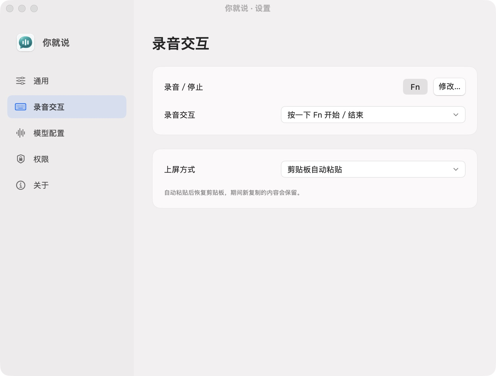
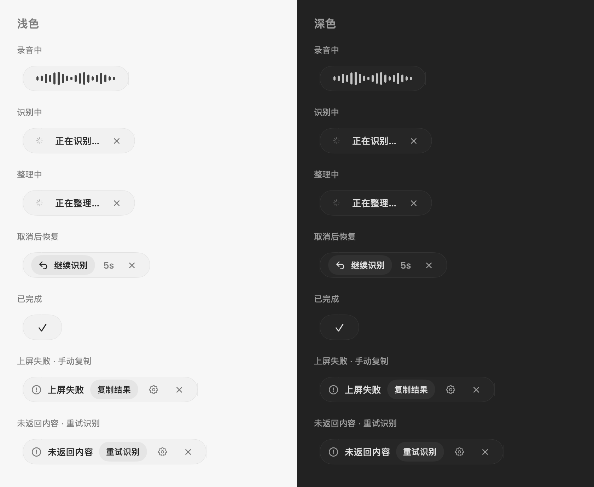

服务自己选，费用看用量。
豆包识别语音，方舟或 OpenAI 兼容服务整理文字。应用不收订阅费，API 服务由你配置、按量付费。

代码公开，自由使用。
自备 API 密钥，服务按量付费。
五笔、RIME，照常使用。
你已经有顺手的输入法。
现在，为它加上语音。
浅色与深色浮条，清楚呈现每一步。
文字怎么整理，服务怎么选，都由你决定。
以下均为应用现有截图，可点击放大。

豆包识别语音，方舟或 OpenAI 兼容服务整理文字。应用不收订阅费，API 服务由你配置、按量付费。
Fn 开始或结束，Esc 取消。自动粘贴、直接键入或仅复制，选你顺手的方式。
你就说采用 MIT 开源许可证，应用免费，没有应用订阅费。语音识别和文字整理使用你自己的 API 密钥，所选服务商会按使用量计费；免费应用不代表 API 免费。
需要一台运行 macOS 14 或更新系统的 Apple 芯片 Mac，以及豆包语音服务的密钥。文字整理可选：启用时配置方舟，或自定义 OpenAI 兼容服务的地址、模型与密钥。无需注册你就说账号。
音频发送至配置的语音识别服务；开启整理时，识别文本会发送至所选整理服务。密钥保存在本机钥匙串，应用不保存文字历史，临时录音正常结束后删除。这是云端识别工具，并非离线识别。
当前安装包未使用 Developer ID 签名与苹果公证。确认从本项目 GitHub Releases 下载后，可到「系统设置 → 隐私与安全性 → 仍要打开」确认。详细步骤见安装指南。